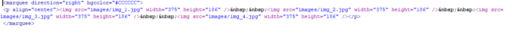
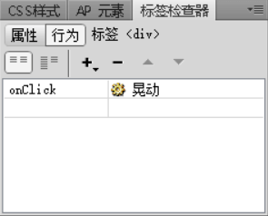
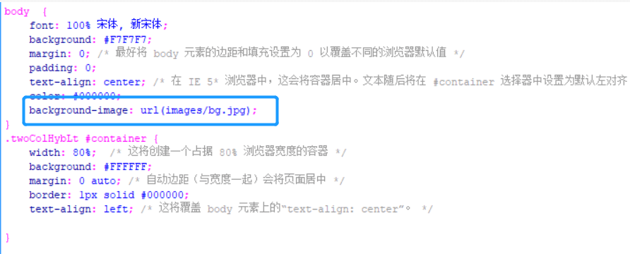

学习笔记
1.如何将文字链接下的横线去掉？
在上课的过程中老师曾讲过如何给文字插入链接，当然这个十分的简单。但是会使文字加上下划线，而且默认是蓝色。看着似乎有点丑，所以打算将下划线给去掉并且把文字改成黑色。于是百度了一下也不是特别的难，就是需要在css的代码中插入一行代码。
| a{text-decoration: none; color:#000000; } |
2.如何给网页插入像首页那样的轮播图片？
之前看书的时候在253页课后题，有个是添加轮播文字的。这个需要在适当的位置使用<marquee>标签，照葫芦画瓢把图片轮播给实现了。但是还是有些困难的，毕竟自己对于代码这个东西是一窍不懂的请教了相关专业的同学才知道到底该怎么弄。

3.如何实现返回顶部按钮？
网页中的返回顶部是通过图片+命名点锚记实现的。首先在想要跳转的地方插入命名锚记o(=•ェ•=)m任意命名即可（自己别忘就行(●'◡'●)）然后在网页底部插入图片，设置对齐方式。然后点击图片，在属性面板中的链接那个位置的文本框中输入"#+刚才的锚记命称"
4.主页中标题框点击晃动特效实现
p align="left">这个灵感还是来自课本之上，课本上介绍了如何使用dw软件给网页添加Ap Div给网页中的元素添加行为，但是书上的仅仅是一部分。在自己对知识海洋的探索之中发现了还有更多好玩的东西，所以就添加了晃动的特效 5.一个网页“两个背景图"实现
有很多的网站上都有这种情况，这个准确的怎么说我页不知道😂 因为自己使用的是模板所以创建好后它左边的颜色和中间的不一样，并且是灰色的还是那种深灰。自己点看了代码看了下使用模板的代码人家是给写了注释了的，自己仔细的看了许久发现了一些东西。是因为它定义的每个区域颜色不一样，所以会有不同的颜色，自己尝试着修改过backgroun的数值，界面颜色真的发生了改变。当我在输入background的时候出现了一个什么叫bcakground-image的东西，感觉这网页应该是背景图片，百度了一下子还真的是这样子。百度了它的用法于是最终应用到了自己的网页之中。
6.鼠标放在图片上出现文字
在看代码的过程中知道图片的标签是我们可以通过输入代码的形式来插入图片，不在局限于鼠标操作。img标签中有个title，title意思即为标题的意思，尝试输入一些内容保存后打开网页发现鼠标放在图片上时出现了刚才输入的内容，于是知道了新的操作。
7.网站的布局介绍
此次作业参考网上的众多网站的布局，从而选择了两款较为常见的布局。在用dw创建html文件的时候使用软件的模板，来选择自己喜欢的布局。这样就解决了自己对于布局问题的烦恼，为我们节省了很多的时间。